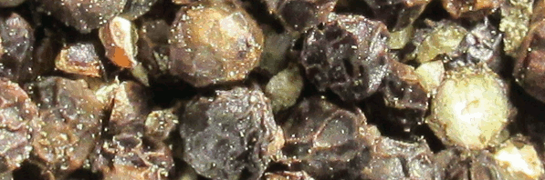

On this page you can read articles by Michael written on diet, heavy metals, mould and yeast and parasites in our environment.
Simply click on the topic:
What you put in your mouth is crucial. Unfortunately a lot of food items are contaminated with chemicals, pesticides, preservatives, toxic mould and/or heavy metals. If you have access try to eat organic produce. Not all of it is of good quality but you can reduce your exposure to harmful substances.
However you may increase your exposure to mould and bacteria. Food handling is important with organic produce that has been dried, transported long distances, then stored in food bins in the retail outlet.
Michael has been testing food for over 20 years on his computers. During this time he has identified common problems with certain foods.
This information below is presented in note form. if interested, Michael has references available concerning the material presented here.
Arsenic: found in imported garlic, root vegetables (potato, sweet potato, parsnip, turnip), onion, pepper, shellfish, chicken stock. It is also heavily used in electronics and may leak from mobile phones, tablets, laptops, monitors and LED televisions especially if they are old and on for long periods. It can also be found in the older treated pine used for decking, fencing and garden edging
Mercury: found in farmed and predatory fish, and the fish emulsion used on crops like tomatoes, celery, many greens, citrus, bananas, stone fruit and cashews. Fish emulsion is allowed in organic farming. Mercury is found in cheap hair dyes, perfumes, hair products, makeup and skin creams. Organic brands from well-regulated regions like Europe should be safer. Used heavily in electronic devices - mobiles, tablets, laptops. Still used in popular vaccines eg. influenza (thiomerosal)
Cadmium is contained in vehicle exhaust, rust-proofing paint, artists oils, shellfish, tobacco, marijuana, may contaminate fruits like mango
Lead may contaminate avocados from its use as a pesticide until the late 1980s. Garden soil can be contaminated by lead paint in older suburbs. Lead can be found in solder in electronics, lead-light windows, the flashing on old roofs and lipstick (especially darker colours)
Stainless Steel: cookware, kettles, cafe expresso machines, instant water boilers, canned food. Can cause chronic allergy states. Safer cookware may be enamel, stoneware, Pyrex saucepans
Tin & Antimony: canned food, plastics, plastic water bottles
Radioactive fallout: dust from nuclear testing and mining blows across the country and washes into water supplies after heavy rains where it slowly settles to the bottom. Perhaps avoid tap water for a week after heavy rains and install decent filters
Titanium: toothpaste, sunscreen, makeup, stainless steel, some non-stick cookware
Aluminium: deodorant (including spray cans); aluminium foil, chocolate and sweet wrappers, moulds used to set chocolate; baked goods: baking powder, bread, cakes, pancakes, biscuits, cookies, steamed buns, tarts and pies baked on aluminium trays or cake tins; potatoes, spinach, tea (green more so than black), refined salt, soy milk, coffee pods, canned drinks, aluminium cookware and drink bottles
Thallium: kale, cabbage, broccoli, cauliflower, brussel sprouts, banana. Vehicle exhaust fumes often contain thallium
Mould and yeast are currently using aluminium as a special mineral nutrient. Their growth relies on a mineral that adopts a +1 valency state. Other Group 3B minerals have been used for this property in the past few years including gallum, indium, thallium and boron. For now try to avoid as much aluminium exposure as possible.
Mould is found in damp places, on stored food (nuts, cheese, cereals, raw muesli, pepper, teas), in garden soil and the home.
Nuts: buy local product (Californian walnuts are generally ok), wash well, pat dry, salt, roast at 120 °C for 50 minutes (100 minutes for raw peanuts), then store in the fridge or freezer
Cheese: old cheese can be mouldy. Cut off the mouldy rind, avoid buying pre-grated cheese except for baking or grilling. Best stored in the freezer
Pepper: peppercorns are seeds picked up from the ground, bagged up and exported from developing countries. You would expect them to be mouldy. Always decline when restaurant staff offer to grate raw pepper onto your food
Tea: gently boil teas both black and herbal for 1-2 minutes to kill mould spores
Cereals: freezing cereals does not kill mould but does slow it down
- put raw cereals like muesli in a hot fry pan for 30-60 seconds before eating
- clean up dust from stored foods carefully on kitchen surfaces
- organic cereals may be more contaminated
– use extra care with imports like quinoa
Your garden: use a mask and gloves when handling garden soils and composts
Your home: remove visible mould from household areas with diluted white vinegar
- examine for mould behind and under furniture especially in damp areas
- ventilate living areas well – remember the most toxic moulds do not have a musty smell
- use dehumidifiers or absorbent crystals if unable to ventilate (wardrobes, basements, attics)